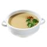
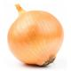
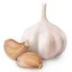
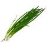
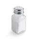
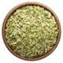
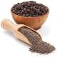

Hambúrguer caseiro
Nada melhor para receber os amigos no fim de semana do que um delicioso hambúrguer artesanal, com aquele toquezinho caseiro especial! Se engana que é apenas moer a carne, deixar ela no formato certo, e frita-la para fazer um hambúrguer artesanal em casa. É preciso escolher a carne certa e saber temperá-la bem para que ele fique tão gostoso e suculento quanto um comprado em uma hamburgueria gourmet. Um dos segredos para deixar seu hambúrguer caseiro suculento é saber selar a carne corretamente durante a fritura. No começo do cozimento, você deve fritar dos dois lados em temperatura alta para formar uma crosta, que irá impedir que o hambúrguer perca água para a panela. Depois, você pode diminuir a temperatura da frigideira e terminar o cozimento. Quer aprender como fazer um hambúrguer caseiro delicioso para o final de semana com os amigos? Cola aqui que a gente te dá o passo a passo!
Ingredientes (8 porções)
-

1 kg de carne moída (de preferência patinho)
-

1 sachê de creme de cebola
-

1 cebola media picada
-

4 dentes de alho picado
-

cebolinha a gosto
-

sal a gosto
-

orégano a gosto
-

pimenta a gosto
Utensílios

Modo de preparo
Modo de preparo : 30 minutos
- Misture todos os ingredientes, amasse bem e forme bolinhas, depois achate para ter a forma de hambúrguer.
- Frite numa frigideira antiaderente, coloque uma colher de óleo pois a carne não tem gordura.